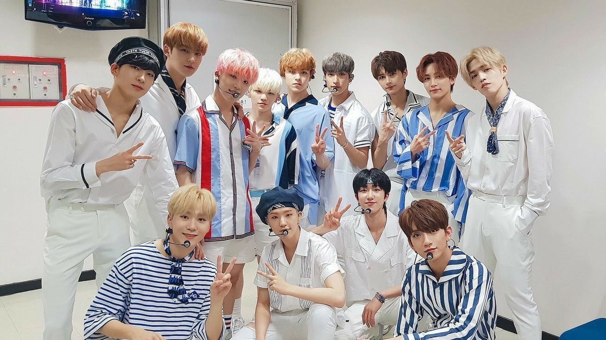
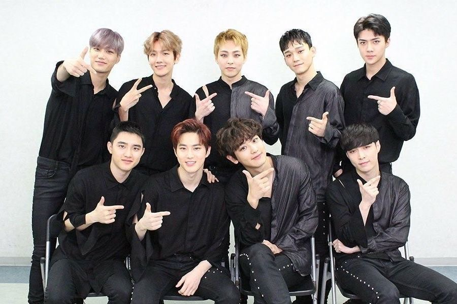
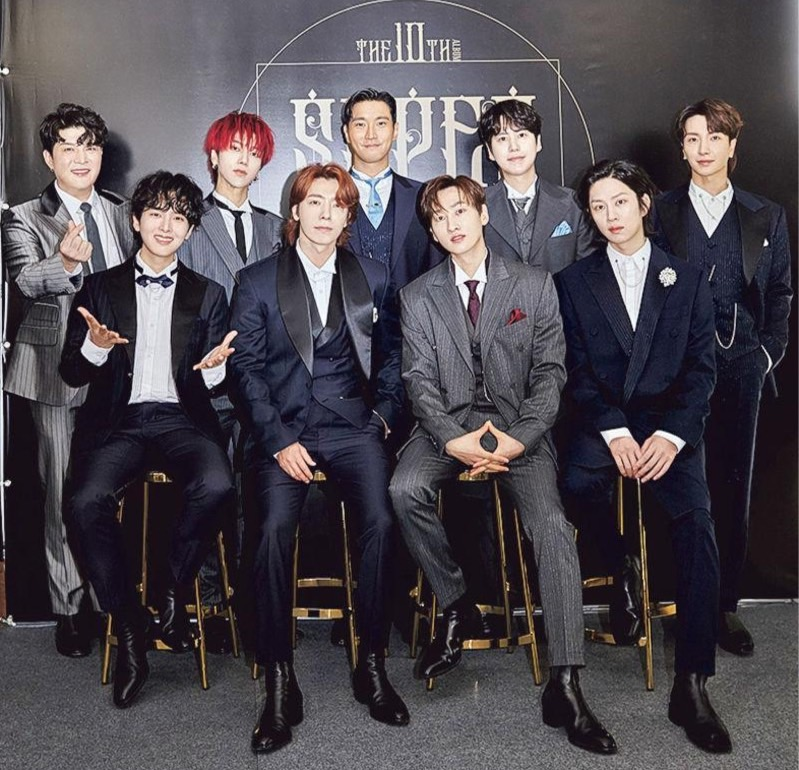
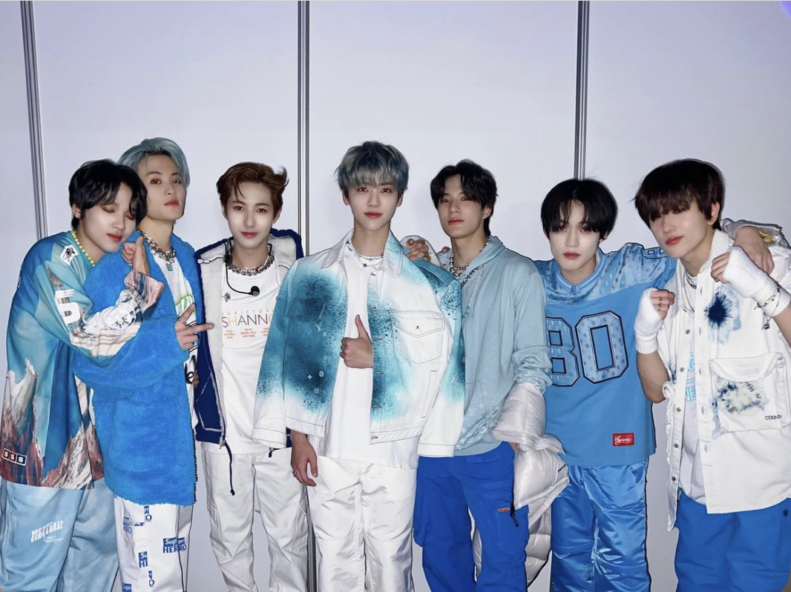

韓團大補帖
《韓國男團》
SEVENTEEN

團體總共13人，其中也分成了3個分隊:Hiphop team、Vocal team、Performer team隊名寓意"13名成員+3個分隊+1個整體"粉絲名:CARAT
詳細資訊：
SAY THE NAME
EXO

原有12個人退團之後變成9個人，每個人都有超能力小分隊:EXO-CBX 、 EXO-SC隊名寓意"從未知星球來的新星"粉絲名:EXO-L
詳細資訊：
WE ARE ONE
SUPERJUIOR

被媒體稱為"韓流帝王"小分隊:SUPERJUIOR-K.R.Y 、SUPERJUIOR D&E 粉絲名:E.L.F
詳細資訊：
SORRY SORRY
NCT

團體共23個人，成員無上限的組合小分隊:NCT U 、NCT 127 、 NCT DREAM 、WAY V隊名寓意"NCT取自「Neo Culture Technology（新文化技術）」的首字母"粉絲名:NCTzen
詳細資訊：
TO THE WORLD
ASTRO
隊中有著世界級臉蛋"車銀優"有兩個小分隊粉絲名:AROHA
詳細資訊：
WANNA BE YOUR STAR